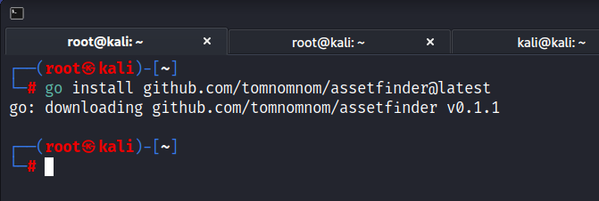

Now will install a tool called asset finder and in previous vidoes we used sub lister (i.e. it was ahead of it's time when it came out)
Simply search it on google will get a github link:
go get -u github.com/tomnomnom/assetfinder
the command is not working anymore so will make a little change in it
go install github.com/tomnomnom/assetfinder@latest

PSA/FIX : httprobe and assetfinder installation/compile
Instruction for installation are incorrect due to version changes in go-lang
Current Instruction:
`go get -u github.com/tomnomnom/httprobe`
Update course instruction to use :
for assetfinder:
`go install github.com/tomnomnom/assetfinder@latest`
additional update :
`sudo apt -y install httprobe`
will also resolve the issue
I installed it as normal kali user cuz i was not able to find assert in root user.
Command: assertfinder tesla.com

It's also finding assest related to Tesla or that should or might be owned by Tesla.
Command:assestfinder --subs-only tesla.com
cat tesla-subs.txt | wc -l